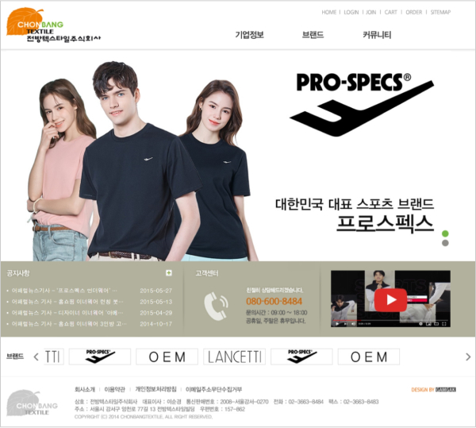
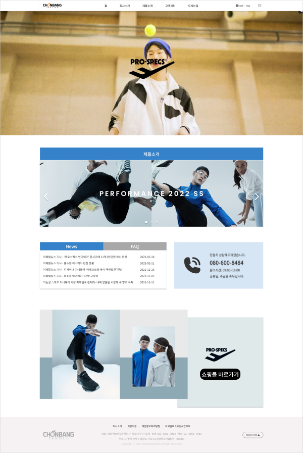

Portfolio
전방텍스타일 리뉴얼 사이트 작업과정
| 구분 | 반응형 웹 |
|---|---|
| 제작기간 | 14일 |
| 제작영역 | 메인페이지 1 + 서브페이지 8 기존사이트의 올드한 구성을 개선하고, 단조롭던 메인페이지를 조금 더 풍성한 컨텐츠로 구성하였습니다 또, PC와 MOBILE을 모두 지원하는 반응형 웹사이트를 구축하였습니다. 또 기존의 올드한 로고를 리뉴얼해보았습니다. |
| 주요컬러 | |
| 프로젝트 결과 보고서 | 상세보기 |
| 디자인시안 |
Before & After
Before

after
